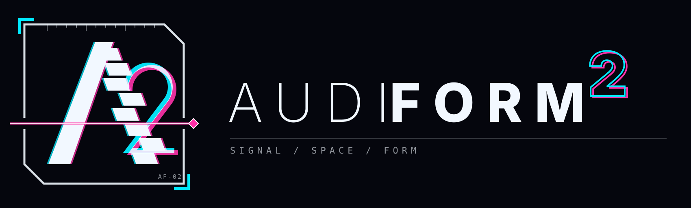
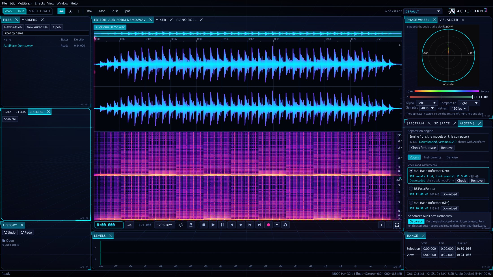
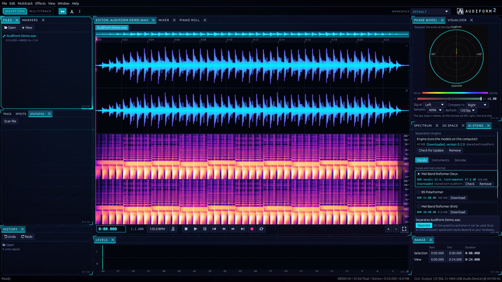

Waveform, spectral, multitrack
Destructive waveform editing with an undo history, a spectral display with frequency zoom and log or linear scales, and a multitrack editor with clips, fades, buses and sends.

AF2 // AUDIO EDITOR // PURE RUST
AudiForm 2 is a multitrack and waveform audio editor written entirely in Rust. No browser engine, no web view: a native app that opens in an instant, mixes three times faster than its predecessor on one core, and looks like nothing else on your desktop.

Destructive waveform editing with an undo history, a spectral display with frequency zoom and log or linear scales, and a multitrack editor with clips, fades, buses and sends.
Dockable panels arranged the way long-time editors expect, with Default, Music, Mixing, Focused Edit and Mastering workspaces. Drag where panels meet to resize four at once.
Place every track in a room instead of panning it. 5.1 to 7.1.4 speaker layouts, binaural monitoring on headphones, and every effect works on every channel.
Split music into vocals and instruments with public models that run on your own GPU or CPU. Nothing is uploaded, and nothing runs until you ask.
The calibrated Phase Wheel, a spectrum analyser, loudness statistics and a full-screen visualizer with seven looks, all drawn on the GPU.
Rebind every command, keep several keys per command, and tune zoom, follow, autosave and colours in a settings window that explains itself.
WAV, AIFF, FLAC, MP3, AAC and M4A, Ogg, DTS in WAV, multichannel files and Audiform .audfrm sessions, which round-trip byte for byte.
MIDI tracks with a piano roll, per-note velocity and pan, sixteen channels and a built-in synth, ready before you install a single plug-in.
A dense 48-track session with effects on every track, measured in multiples of real time at the same thread count. Higher is better.
Audiform 1 AudiForm 2
A lock-free worker pool, no allocation on the audio thread, and a renderer that rests when nothing moves (about 3% of one core while idle with every animation on).
Glass panels over a living grid, a laser playhead and a boot sequence, all in Zero Point, the default. Ten more themes come from Audiform 1, remade with real marble, glazed tile, picture backdrops and their own splash screens. Every theme's colours can be retuned.

And at least one you'll have to find for yourself.
The interface, the audio engine, the effects, the decoders and the file formats are all written in Rust. There's no Chromium, no Electron, no web view and no JavaScript, so it starts in a moment and stays light.
No account, no telemetry, no network calls of its own. AI features run on your machine and stay off until you turn them on.
Windows 10 and 11 are the main target. Linux and macOS builds are planned.
git clone https://github.com/nwh212/AudiForm2
cd AudiForm2
cargo run --release